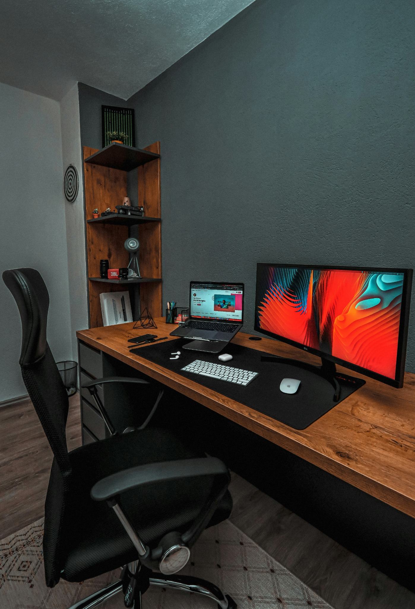
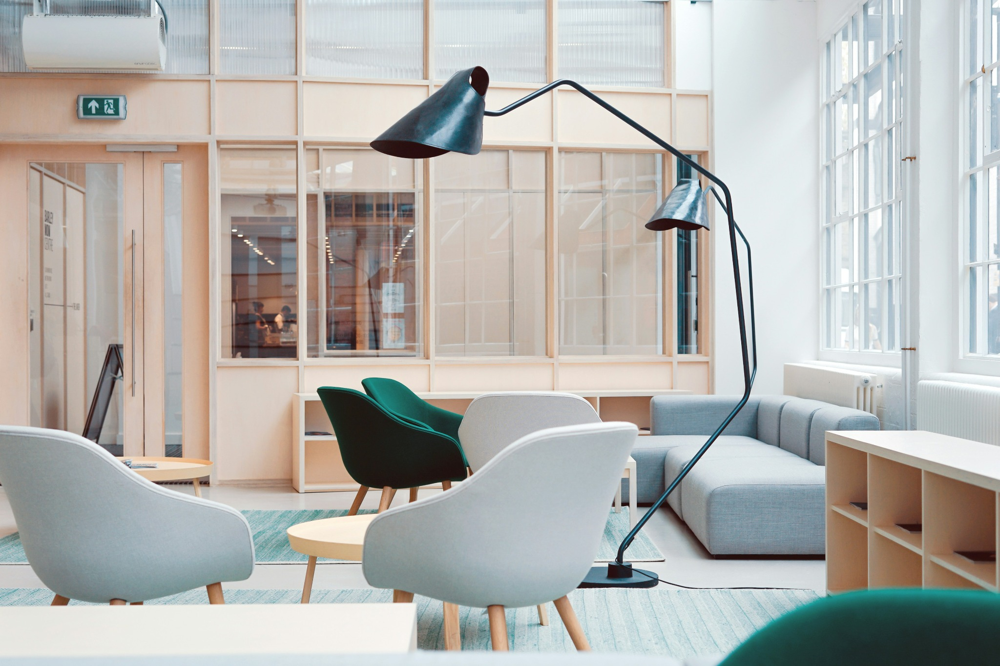
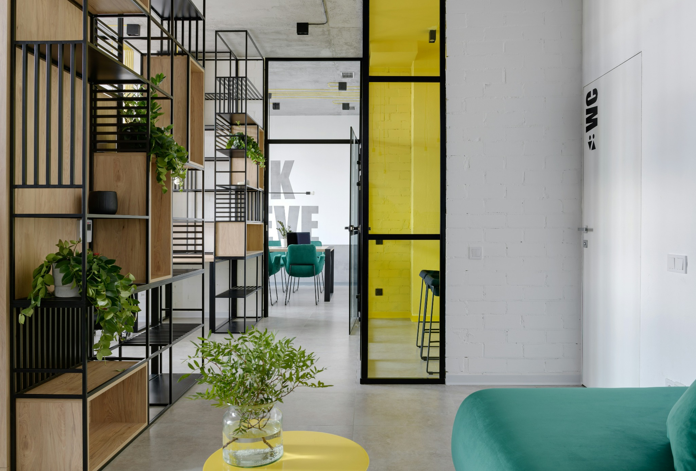

All three describe different layers of the same practice. Research builds the evidence base; strategic thinking decides what matters and how it should be framed; writing gives the thinking a usable form. The balance changes with the brief, but the process stays connected.
Emmanuel Ekwueme
Writer · Researcher · Strategic thinker
Make the complex
clear.

InvestigateBuild the evidence.
InterpretFind what matters.
ShapeMake it useful.The thread
I turn difficult material into work people can use.
My work sits where research, editorial judgement and communication meet: find the evidence, shape the point, then give it the form an audience can understand, trust and act on.
SELECTED PROJECTS / 04 CASE STUDIES
PROJECTS
From first idea to something that works.
Not a gallery of finished surfaces. These are working problems: what was missing, what I changed, the method behind it and what became possible afterwards.
Choose a case↘
Process map
From brief to useful.
The route changes with the assignment. The discipline does not: establish the question, build the evidence, find the meaning, then choose the form.
00BRIEFName the real questionWhat needs to become clearer?
01EVIDENCEBuild the caseWhat do we know — and trust?
02MEANINGFind the pointWhat changes because of it?
03FORMDesign the deliveryWhat will this audience actually use?
Possible forms
FeatureResearch briefPresentationEssayScript / media
↓
04 / OUTCOMEUnderstand. Decide. Act.The work earns its place when the audience leaves clearer than it arrived.
Selected work
Choose a world.
The folders tell you what the work is. The worlds tell you what it is doing. Enter by capability, then open any project for the evidence behind it.
The archive
The folders stay.
The clutter goes.
The original folders stay intact below — the literal record of the work by format. Open one when you want the full range; the worlds above are the faster route to what the work proves.
Get to know the practice
The questions the work alone cannot answer.
A short recruiter-facing FAQ: not biography for biography’s sake, but the things that clarify where Emmanuel fits, how he thinks and where the range becomes useful.
Because the underlying skill is not attachment to one format. It is the ability to enter a subject, understand it quickly, identify the central tension and communicate it for a specific audience. That can become a feature, a research brief, an essay, a presentation or a multimedia research output.
Roles and projects across communications, editorial and periodical publishing, research, content strategy and adjacent fields where strong synthesis and communication matter. The sector can be conventional or unexpected; the important question is whether the work needs someone who can move from information to insight to clear execution.
Briefs with ambiguity, complexity or too much information and not enough hierarchy. The strongest fit is often a problem that needs research first, judgement second and a clear narrative or strategic output at the end.
A research-and-communication discipline that travels well: learning unfamiliar subjects, separating signal from noise, identifying what an audience needs to understand, structuring arguments and turning complex material into work people can actually use.
Emmanuel Ekwueme
About Emmanuel Ekwueme
Breadth should feel intentional.
The range is deliberate: writing, research and strategic thinking are different expressions of the same core strength — making difficult material intelligible, useful and worth paying attention to.
Research & synthesisEditorial strategyLong-form writingMarket intelligenceInterview featuresPresentation narrativeMultimedia researchContent systems
Start with the difficult part
Bring me the complex brief. I’ll make the next move clearer.
Work with Emmanuel
For editorial, communications, research, strategy and adjacent briefs where judgement matters as much as execution.